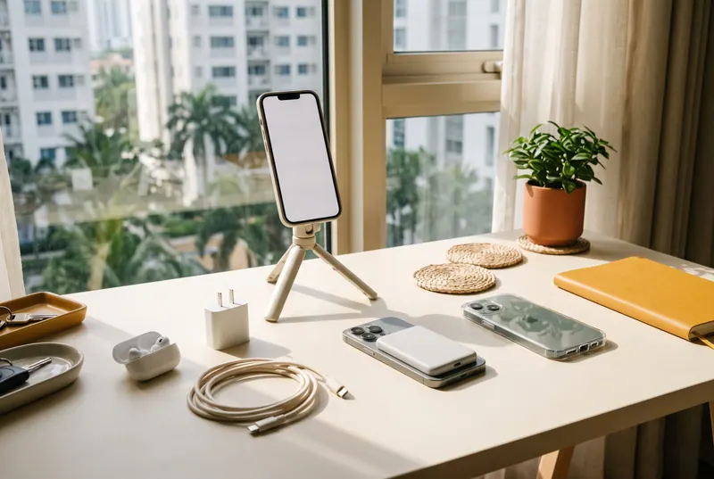

The small add-ons that make a phone easier to live with every day, from a flight-friendly power bank to a cable that won't give up on you. Picked from real Lazada listings and checked against independent reviews.
Updated Oct 12, 20268 min read6 picksPrices checked Oct 12, 2026

AI sample render
1Sample render made with AI for inspiration. It is not a photo of the actual products; the real product photos from Lazada are below.
Heads up: links to Lazada on this page are affiliate links, so we may earn a small commission if you buy, at no extra cost to you. This guide was researched with the help of AI tools. Here's how we pick.
Your phone carries a lot of your day: e-wallet payments, ride bookings, work chats, the family group chat, maps, and every photo from the last out-of-town trip. The accessories around it don't need to be fancy. They need to keep it charged, protected and steady, and they need to be genuine, because a fake charger or power bank isn't just money wasted. It can overheat.
So we kept this list short and practical. Every pick is available through Lazada, comes from a well-known brand sold by an established store with steady recent sales, and was checked against manufacturer spec pages and independent reviews. Where the evidence is thinner, we tell you, so you can decide how much weight to give it.
CAAP bans power banks over 160Wh on flights, and up to 100Wh is allowed on board. Philippine Airlines and Cebu Pacific allow a maximum of two power banks of 100Wh or less. They must travel with you, not in checked bags, and both airlines say to keep them out of the overhead bin and not to charge with them during the flight. A 10,000mAh power bank is about 37Wh. Keep the capacity label readable, and check your airline's latest rules before you fly.
In June 2025, Anker recalled five power bank models (A1257, A1647, A1652, A1681 and A1689) because of battery cells from one supplier. Our pick, the A1685, is not one of them, and while researching we skipped a listing whose name included a recalled model code. Whatever power bank you buy, make sure the model on the box matches the listing.
About the sellers: Picks 1 to 4 are sold by the Anker Global store on Lazada. Anker Philippines' 18-month local warranty covers its official Philippine channels, so check the warranty and where the item ships from on the listing before you buy.
Running out of battery away from an outlet is the most common phone problem there is, which is why a good power bank tops this list. This is the best-reviewed 10,000mAh bank we found through Lazada: it has a USB-C cable built right in, so there's nothing to forget at home, and at about 37Wh it sits comfortably under airline limits.
From around ₱2,395Price checked Oct 12, 2026 · Sold by Anker Global
Gave it an Editors' Choice. In their battery test it recharged an iPhone 16 Pro to 191%, the best result among the iPhone power banks they had tested at the time. (Macworld)
Their main reservation: the built-in USB-C cable suits USB-C phones best, so on iPhones that means the iPhone 15 generation and newer. (Macworld)
Lists 10,000mAh capacity, 30W wired charging, 7.5W magnetic wireless charging, a built-in USB-C cable and a fold-out stand. (Anker (manufacturer))
What we like
Editors' Choice from Macworld, with the top recharge result in their test
Built-in USB-C cable plus a spare USB-C port, up to 30W wired
Snaps onto MagSafe iPhones and has a kickstand for videos
About 37Wh, well under the 100Wh airline limit
Keep in mind
Wireless charging is only 7.5W
The magnet only helps MagSafe iPhones or phones in a magnetic case; Android users will mostly use the cable
Total output drops to 15W when charging two devices
Costs more than a basic 10,000mAh bank
Best for
iPhone users with MagSafe, and anyone who wants a power bank with its own cable for commutes and flights.
Before you buy
Choose your colour, then check that the box says A1685. When flying, keep it with you (seat pocket or under the seat), never in checked luggage or the overhead bin.
Also considerBaseus Magnetic Mini Power Bank 10,000mAh (20W)
A cheaper magnetic option from the Baseus store. We couldn't find an independent review we could verify, and the listing name doesn't give a model number, so treat it as a budget backup.
Research: moderate · maker specs and coverageAnker
A tiny charger that fast-charges both iPhones (USB Power Delivery) and Samsung and other Android phones (PPS). It ranks second only because some Android phones sold here still include a fast charger in the box, so check yours first. If your phone came without one, start here.
From around ₱395Price checked Oct 12, 2026 · Sold by Anker Global
Lists one USB-C port, 30W max, PD 3.0 and PPS, 100 to 240V input, about 3.1 x 3.2 x 3.6 cm and 49 g. Anker says it charges an iPhone 15 to 50% in about 26 minutes; that's the maker's claim, not an independent test. (Anker (manufacturer))
Covered the Zolo chargers' Philippine launch: a foldable plug, a built-in temperature sensor and a stacked design about 25% smaller than chargers with the same output. (Unbox PH)
What we like
30W with PD and PPS covers iPhones and most Android fast charging
Very small and light, with a foldable plug
Built-in temperature sensor, per Anker
One of the best sellers in this guide, based on recent sales
Keep in mind
Single port, so one device at a time
We found no independent lab test; the speed and heat claims are Anker's own
The listing covers more than one model, so you need to pick the right option
Best for
Anyone whose phone came without a charger, or who wants a small fast charger for the bag.
Before you buy
The listing includes two model codes. Choose the 30W option (A2698), which may cost a little more than the starting price, and pair it with a USB-C cable like pick #3.
Also considerUGREEN 20W/30W GaN USB-C Fast Charger
From UGREEN's store on Lazada, with strong recent sales. The listing name doesn't give a model number, so choose the 30W option and check the box.
Anker Zolo 240W Braided USB-C to USB-C Cable (A8060)
Research: strong · independent reviewsAnker
Cables are the accessory that quietly fails first. This braided one was independently tested and passed, which is rare at this price, and it had the most recent sales of anything in this guide.
From around ₱260Price checked Oct 12, 2026 · Sold by Anker Global
Independent test: USB-IF certified, which the reviewer calls very unusual at this price, with an e-marker chip; it held 140W continuously on their load tester. Overall grade: B+. (Cheap & Cheerful)
Same reviewer's main con: data runs at USB 2.0 speed (480 Mbps), so it's a charging cable, not a fast file-transfer cable. (Cheap & Cheerful)
Rated 240W (USB PD 3.1), sold in 0.9 m and 1.8 m lengths, braided with a slim 5.8 mm connector. No video output. (Anker (manufacturer))
What we like
Independently tested: USB-IF certified with an e-marker
Enough power for phones, tablets and most laptops
Soft, flexible braid with a slim connector
Very affordable for a certified cable
Keep in mind
USB 2.0 data speed only
No video output or screen mirroring
A 240W rating won't make your phone charge faster than the phone and charger allow
Best for
A spare cable for the bag, the car or your power bank, or replacing a frayed one.
Before you buy
Pick the length (0.9 m or 1.8 m) and colour. It's USB-C on both ends, so older Lightning iPhones need a different cable.
Also considerUGREEN 100W 5A USB-C to USB-C Cable
From UGREEN's store. Rated 100W with an e-marker according to the listing name, enough for phones, tablets and many laptops.
Research: strong · independent reviewsSoundcore by Anker
Real active noise cancelling and long battery life at a budget price. Two hands-on reviews, including one from a Philippine site, agree the noise cancelling works well for what you pay, especially against traffic and engine rumble on the commute.
From around ₱1,295Price checked Oct 12, 2026 · Sold by Anker Global
Calls noise cancelling one of its strongest points, cutting traffic and indoor noise well; comfortable for long sessions, and the case flips into a phone stand. Downsides: bass-heavy default tuning, some sound leakage at higher volume, and an average transparency mode. (Gadgetbyte Nepal)
A budget pick that punches above its price. The ANC works best on steady low-frequency noise like traffic and engine hum but doesn't block everything; light, comfortable fit; bass-heavy sound. (WalasTech (PH))
Lists adaptive ANC up to 42 dB, 10 mm drivers, Bluetooth 5.4, about 10 hours per charge and 45 hours with the case with ANC off (about 7 and 30 hours with ANC on), IP54, and an 18-month Soundcore warranty through official channels. (Anker Philippines (manufacturer))
What we like
Adaptive noise cancelling at a budget price
Long battery life, especially with ANC off
Case doubles as a phone stand
App EQ lets you tame the bass
Keep in mind
Bass-heavy out of the box
Some sound leakage at high volume
Transparency mode is only average
IP54 means splash resistant, not swim-proof
Best for
Commuters on jeeps, buses and trains who want noise cancelling without spending much.
Before you buy
Battery life is shorter with ANC on. Turn it on for the commute and off at your desk to stretch a charge.
Also considerXiaomi Redmi Buds 6 Active
About half the price, from Xiaomi's store on Lazada. According to the listing name: Bluetooth 5.4, call noise reduction and up to 30 hours with the case. There's no noise cancelling for music, so it's for calls and casual listening.
Spigen Ultra Hybrid T MagFit Case for iPhone 16, 16 Pro and 16 Pro Max
Research: strong · independent reviewsSpigen
A case has to match your exact phone, so this pick is for iPhone 16, 16 Pro and 16 Pro Max owners. Spigen was the only well-known case brand we found in the feed, sold from Spigen's own store, and this model keeps the Camera Control button usable through the case.
From around ₱2,191Price checked Oct 12, 2026 · Sold by Spigen
Hands-on: the touch-sensitive Camera Control cover works well and passed Apple's gestures through reliably; MagSafe works well through the case. Cons: the raised lip around the screen is bigger than the reviewer likes, and the button covers feel less clicky than metal ones. (9to5Toys)
Made of polycarbonate and TPU with Air Cushion corners, MagSafe compatible, with a capacitive Camera Control cover. (Spigen (manufacturer))
Spigen says it can only guarantee items bought through its official channels, because knockoffs circulate. (Spigen support)
What we like
Camera Control stays usable through the case
Works with MagSafe chargers, mounts and power banks like pick #1
Clear back shows off your phone's colour
Sold from Spigen's own store
Keep in mind
Only fits iPhone 16, 16 Pro and 16 Pro Max (not the 16 Plus)
Pricier than generic cases
Raised screen lip that some people dislike
Best for
iPhone 16-series owners who want a clear MagSafe case from a known brand.
Before you buy
Select your exact model and colour; the price can differ by variant. If your phone came with a basic case, try it first before buying another.
Ulanzi MT-44 Extendable Phone Tripod and Selfie Stick
Research: strong · independent reviewsUlanzi
A selfie stick, a tabletop or floor tripod and a phone clip in one light piece of gear, from a well-known creator-equipment brand. It earns its spot for group photos on trips, videos and hands-free video calls.
From around ₱1,099Price checked Oct 12, 2026 · Sold by Tech Smart Philippines
Hands-on: light at 422 g, folds small for travel, with six height sections, a 360° ball head and a hidden phone holder, so no extra mount is needed. The legs feel stable on flat ground. (Tech Edition)
Same review's cons: it can wobble when fully extended outdoors, the build is plastic, the small screw cover is easy to lose, and the sections can feel stiff. Phone width supported: about 6 to 8 cm. (Tech Edition)
Extends to about 146.5 cm in six sections and also works with mirrorless and action cameras. (Ulanzi (manufacturer))
What we like
Selfie stick, tripod and phone clip in one
Light and packs small
Ball head for portrait or landscape shots
Also holds small cameras
Keep in mind
Wobbly at full height, especially in wind
Plastic build
Small parts that are easy to lose
No remote mentioned in the listing; use your phone's timer
Best for
Trips with the barkada, solo travel, short videos and video calls.
Before you buy
Measure your phone's width with its case on; the clip fits about 6 to 8 cm. Keep it lower in windy spots.
How we picked these
We started from products available through Lazada's affiliate program, kept only well-known brands from established stores with steady recent sales, then read manufacturer pages and independent reviews for each model and cross-checked our notes with AI research assistants (Claude, Gemini and ChatGPT). We haven't tested these products ourselves. We also looked at car phone mounts, but none we found had enough independent evidence behind it to recommend yet. Lazada star ratings aren't part of the data we can access, so read the latest buyer reviews on each listing before you check out. More on how we pick.
1About the images: pictures marked "AI sample render" were generated with AI (Google Gemini) from text descriptions, for inspiration. They show items similar to our picks styled in a room; they are not photos of the actual products and may differ in size, colour and detail. The real product photos come from each product's Lazada listing and are shown unmodified.
About prices: prices were checked on Oct 12, 2026 and change often, and many listings have several options at different prices. Always check the final price, options and seller details on Lazada before you buy.
 Lazada listing photo
Lazada listing photo